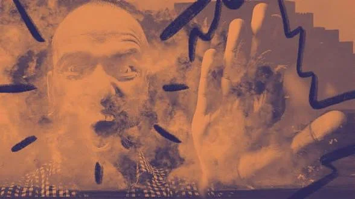
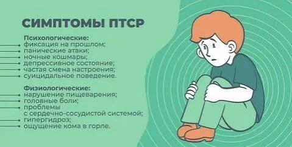
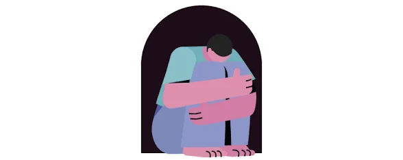

ПТСР
Посттравматическое стрессовое расстройство — это не слабость и не «накручивание себя». Это устойчивая реакция психики и тела на событие, которое было угрозой жизни, здоровью или безопасности.

Что считается травмирующим событием
- Пережить его самому: насилие, нападение, авария, катастрофа, война, пытки, плен.
- Быть свидетелем того, как это происходит с другими.
- Узнать, что такое случилось с близким человеком.
- Много раз сталкиваться с подробностями чужой травмы по работе: спасатели, врачи, полицейские, следователи.
Заболевают далеко не все, кто пережил такое. По данным международных опросов ВОЗ, ПТСР возникает примерно у 4% людей на протяжении жизни. Риск выше, если событие было длительным или умышленным, если рядом не было поддержки или травм уже было несколько.
Четыре группы симптомов
Вторжение
Непрошеные воспоминания, кошмары, флешбэки, сильные реакции тела и эмоций на напоминания.
Избегание
Человек обходит мысли, разговоры, места и людей, связанных с событием. Со временем жизнь сужается.
Негативные изменения мыслей и настроения
Провалы в памяти о событии, стойкие вина и стыд, ощущение «мир опасен, людям нельзя верить», эмоциональная «заморозка», потеря интереса к прежнему.
Повышенная возбудимость
Раздражительность, гипербдительность, вздрагивание, трудности с концентрацией, бессонница, рискованное поведение.
Что такое флешбэк
Это не просто яркое воспоминание. Человеку кажется, что событие происходит прямо сейчас: меняются дыхание, пульс, ощущения в теле. Память о травме хранится «сырой», без отметки «это было в прошлом», и мозг реагирует так, будто опасность вернулась.
Сколько это длится
Первые дни и недели после тяжёлого события тяжело почти всем, и у многих это проходит само. О ПТСР говорят, когда симптомы держатся дольше месяца по критериям DSM-5 (в МКБ-11 — несколько недель) и мешают жить. Иногда симптомы появляются спустя месяцы или годы.

«The ordinary response to atrocities is to banish them from consciousness.»
Джудит Герман, «Травма и исцеление» (Trauma and Recovery), 1992

Мифы
«Это бывает только у военных». Нет: ПТСР возникает после насилия, аварий, потери близких при тяжёлых обстоятельствах, медицинских катастроф.
«Надо просто взять себя в руки». Это не вопрос воли: у расстройства есть биологические механизмы, и оно лечится.
«Если не вспоминать, пройдёт». Избегание приносит краткое облегчение, но обычно удерживает симптомы.
История понятия
Реакции на войну описывали давно: в Гражданскую войну в США говорили о «солдатском сердце», в Первую мировую — о «снарядном шоке». После войны во Вьетнаме американские ветераны и врачи добились признания проблемы, и в 1980 году ПТСР впервые вошло в американскую классификацию DSM-III. Позже стало ясно, что такие реакции возникают не только у военных, но и после насилия, катастроф и аварий.
Как диагностируют: критерии DSM-5
Для диагноза в DSM-5 нужно: пережить событие, связанное с угрозой смерти, серьёзной травмой или насилием (критерий A), и иметь симптомы из четырёх групп: хотя бы один вторжения, хотя бы один избегания, не менее двух негативных изменений мыслей и настроения и не менее двух повышенной возбудимости. Они держатся дольше месяца, нарушают жизнь и не объясняются лекарствами, алкоголем или другой болезнью.
В МКБ-11 критерии короче: три ядерные группы (переживание события заново «здесь и сейчас», избегание, ощущение постоянной угрозы), которые длятся не менее нескольких недель и мешают жить.
Острое стрессовое расстройство
Если похожие симптомы появились в первый месяц после события (от трёх дней), это может быть острое стрессовое расстройство. Оно не всегда переходит в ПТСР, и многие восстанавливаются, особенно при поддержке.
Что происходит в мозге и теле
При угрозе включается система выживания: миндалевидное тело быстро запускает тревогу, выделяются адреналин и кортизол. После травмы эта система может «залипнуть»: миндалина реагирует слишком остро, а префронтальная кора, которая помогает оценивать ситуацию трезво, хуже её сдерживает. Гиппокамп отвечает за «где и когда это было»: если воспоминание не получило привязки ко времени, оно переживается как происходящее сейчас. Исследования это подтверждают, но механизмы изучены не до конца.
ПТСР у детей
У детей симптомы часто выглядят иначе: повторяющиеся игры, в которых проигрывается событие, кошмары без понятного сюжета, возврат к младшему поведению, жалобы на живот или голову, страх расставания. Для детей до шести лет в DSM-5 есть отдельные критерии. Ребёнку важны предсказуемость, спокойный взрослый рядом и помощь специалиста.
Как поддержать близкого человека
- Слушайте без советов и оценок, не требуйте подробностей.
- Не говорите «это уже прошло» и «возьми себя в руки».
- Предлагайте конкретную помощь: сходить вместе к врачу, помочь с бытом.
- Предупреждайте о том, что может испугать, например резкие звуки.
- Заботьтесь и о себе: поддержка тяжело даётся и тем, кто рядом.
Сайт не заменяет помощь специалиста. Если вы в опасности, позвоните в экстренную службу (112).